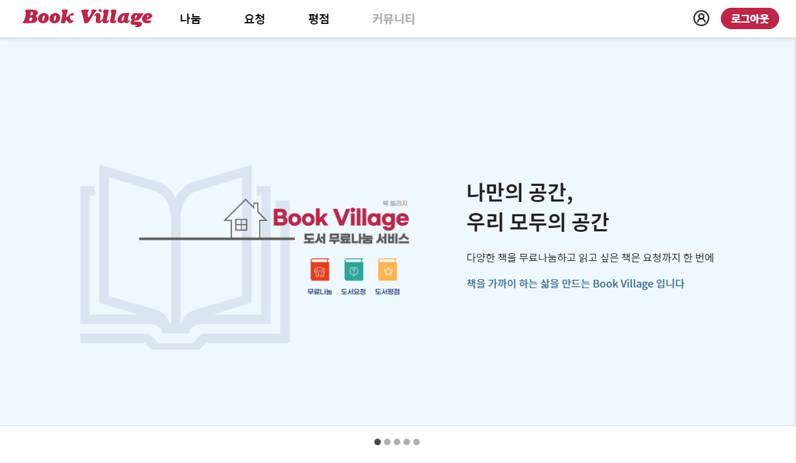

Book Village


Project information
- Category: Web
- Project date: 2023.01 - 2023.02
- URL: https://bookvillage.kro.kr/
- Github: https://github.com/orioncsy/seb41_main_015
서비스 개요
도서를 무료로 나눔하고 요청할 수 있도록 커뮤니티 서비스를 제공하는 웹 서비스입니다. 소셜 계정으로 로그인 및 로그아웃할 수 있습니다. 나눔 및 요청에 대한 게시글과 오픈 채팅 링크를 올릴 수 있고 원하는 이미지를 업로드하여 나눔하려는 도서의 이미지를 올릴 수 있습니다. 또한 사용자가 읽었던 책에 대해서 도서 평점 리뷰를 남길 수 있습니다.
핵심 개발 사항
- Spring MVC를 활용하여 rest API 개발(도서 평점, 커뮤니티 게시판 도메인)
- AWS EC2를 통한 서버 배포
- Jwt를 활용하여 토큰 기반 로그인 기능 구현
- Oauth2를 통한 소셜 로그인 기능 구현(네이버, 구글, 카카오)
- redis db를 통해 로그아웃된 토큰을 관리하여 로그아웃 기능 구현
- S3를 활용한 이미지 업로드 기능 구현(프로필 이미지, 도서 요청 이미지 등록에 사용)
- Flyway를 통한 DB 형상 관리
- 현업에서 ddl-auto를 create나 update를 주로 사용하지 않기 때문에 flyway를 통해 db를 효율적으로 관리하여 형상 관리에 노력하였습니다.
- 도서에 대한 평점 리뷰를 남기는 도메인을 구현하는 과정에서 도서에 대한 평균 평점을 보여주는 기능을 구현했습니다. query문을 통해 모든 리뷰 데이터를 조회하는 것 보다 도서 엔티티 안에 필드를 넣고 리뷰가 생성될 때마다 평점을 계산하는 방식을 통해 성능을 약 16% 개선하였습니다.